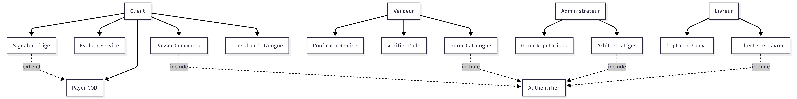

4. Modèle Conceptuel des Données (MCD)
Traduction graphique et structurelle des DFED selon les règles Merise strictes (entités, associations CIM/CIF, cardinalités, identifiants soulignés).

Extraites et formalisées à partir du cahier des charges pour garantir l'intégrité sémantique du modèle.
| Code | Règle de Gestion |
|---|---|
| RG01 | Un client peut commander des articles provenant de plusieurs vendeurs au sein d'une même transaction. |
| RG02 | Un vendeur gère un catalogue de produits et un stock associé. |
| RG03 | Un produit est proposé par un et un seul vendeur. |
| RG04 | Une commande est initialisée par un seul client. |
| RG05 | Une commande est prise en charge par un seul livreur (après affectation). |
| RG06 | La remise des articles par le vendeur au livreur est conditionnée par la validation d'un code de vérification unique. |
| RG07 | Chaque étape de collecte chez un vendeur doit faire l'objet d'une preuve photographique obligatoire. |
| RG08 | Le paiement s'effectue à la livraison (COD). La plateforme prélève automatiquement une commission de 0,6 %. |
| RG09 | En cas de non-conformité, le client ne paie que les frais de retour ; les litiges sont arbitrés par l'administrateur. |
| RG10 | Les retours clients alimentent les scores de réputation des vendeurs et des livreurs. |
Les objets métier identifiés, conformément aux flux décrits dans le cahier des charges.
| Entité | Identifiant | Attributs Non-Identifiants |
|---|---|---|
| CLIENT | id_client | nom, prenom, telephone, adresse_livraison, email, score_reputation |
| VENDEUR | id_vendeur | nom_etablissement, nom_contact, telephone, email, localisation_marche, score_reputation |
| LIVREUR | id_livreur | nom, prenom, telephone, type_vehicule, immatriculation, score_reputation |
| ADMINISTRATEUR | id_admin | nom, prenom, email, telephone, role_systeme |
| PRODUIT | id_produit | nom, description, prix_reference, stock_disponible |
| COMMANDE | id_commande | date_creation, statut, total_marchandises, frais_livraison, commission, code_verification |
| PREUVE_COLLECTE | id_preuve | date_heure, url_photo, statut_validation |
| LITIGE | id_litige | description, date_ouverture, statut, decision_admin, montant_rembourse |
| FEEDBACK | id_feedback | note_produit, note_transport, commentaire, date_publication |
Application stricte de la méthode de normalisation : recherche des Dépendances Fonctionnelles Élémentaires Directes, sans augmentation ni transitivité.
id_client → nom, prenom, telephone, adresse_livraison, email, score_reputationid_vendeur → nom_etablissement, nom_contact, telephone, email, localisation_marche,
score_reputationid_livreur → nom, prenom, telephone, type_vehicule, immatriculation, score_reputationid_admin → nom, prenom, email, telephone, role_systemeid_produit → nom, description, prix_reference, stock_disponibleid_commande → date_creation, statut, total_marchandises, frais_livraison, commission,
code_verificationid_preuve → date_heure, url_photo, statut_validationid_litige → description, date_ouverture, statut, decision_admin, montant_rembourseid_feedback → note_produit, note_transport, commentaire, date_publicationid_commande, id_produit, id_vendeur) → quantite_commandee,
prix_vente_appliqueid_commande, id_vendeur) → statut_collecte_vendeurid_commande, id_client) → statut_livraison_clientid_commande → id_clientid_commande → id_livreurid_produit → id_vendeurid_commande → id_litige (optionnel 0,1)id_commande → id_feedback (1,1)Traduction graphique et structurelle des DFED selon les règles Merise strictes (entités, associations CIM/CIF, cardinalités, identifiants soulignés).
Passage MCD → MLD selon les règles de transformation relationnelles (1FN, 2FN, 3FN). Clés primaires
soulignées, clés étrangères préfixées de #.
CLIENT ( id_client , nom, prenom, telephone, adresse_livraison, email, score_reputation)
VENDEUR ( id_vendeur , nom_etablissement, nom_contact, telephone, email, localisation_marche, score_reputation)
LIVREUR ( id_livreur , nom, prenom, telephone, type_vehicule, immatriculation, score_reputation)
ADMINISTRATEUR ( id_admin , nom, prenom, email, telephone, role_systeme)
PRODUIT ( id_produit , nom, description, prix_reference, stock_disponible, #id_vendeur)
COMMANDE ( id_commande , date_creation, statut, total_marchandises, frais_livraison, commission, code_verification, #id_client, #id_livreur)
DETAIL_COMMANDE ( #id_commande, #id_produit, #id_vendeur, quantite_commandee, prix_vente_applique)
PREUVE_COLLECTE ( id_preuve , date_heure, url_photo, statut_validation, #id_commande, #id_vendeur)
LITIGE ( id_litige , description, date_ouverture, statut, decision_admin, montant_rembourse, #id_commande)
FEEDBACK ( id_feedback , note_produit, note_transport, commentaire, date_publication, #id_commande, #id_client)
Le MLD est en 3FN : aucune dépendance partielle ni transitive. Les jointures naturelles garantiront la restitution des données multi-vendeurs, le suivi de collecte et l'arbitrage des litiges.
Passage du modèle relationnel (Merise) au modèle conceptuel objet, conforme aux standards UML 2.x enseignés.
Rôle : Recueillir, analyser et organiser les besoins fonctionnels en recensant les grandes fonctionnalités du système ViteComm.

<<include>> pour les traitements obligatoires (ex:
validation solde). <<extend>> pour les conditions (ex: signalement litige si
non-conformité). Généralisation implicite via Utilisateur.
Rôle : Présenter la structure interne du système et fournir une représentation abstraite des objets qui interagissent.

Rôle : Mettre l'accent sur les traitements, représenter graphiquement le comportement métier et décrire le déroulement séquentiel conforme aux normes UML 2.x.
flowchart TD
classDef swimlanefill fill:#ffffff,stroke:#d0d7de,stroke-width:2px,rx:8,ry:8
classDef action fill:#e3f2fd,stroke:#1976d2,stroke-width:2px,rx:6,ry:6
classDef decision fill:#fff3e0,stroke:#f57c00,stroke-width:2px
classDef terminal fill:#2c3e50,stroke:#2c3e50,stroke-width:2px,color:#ffffff,rx:50,ry:50
subgraph Client["Partition : Client"]
Start(( )):::terminal --> A1[Initialiser commande]:::action
A1 --> A2[Saisir articles multi-etales]:::action
A2 --> A3[Valider panier]:::action
A3 --> D1{Confirme ?}:::decision
D1 -->|Non| A4[Annuler / Modifier]:::action
A4 --> End1(( )):::terminal
end
subgraph System["Partition : Systeme ViteComm"]
D1 -->|Oui| B1[Generer code verification]:::action
B1 --> B2[Notifier Vendeurs et Livreur]:::action
B2 --> B3[Consolider itineraire]:::action
B3 --> B4[Valider preuve photo]:::action
B4 --> D2{Photos validees ?}:::decision
D2 -->|Non| B5[Demander reprise photo]:::action
B5 --> B3
end
subgraph Seller["Partition : Vendeur"]
D2 -->|Oui| C1[Recevoir notification]:::action
C1 --> C2[Verifier code commande]:::action
C2 --> C3[Preparer articles]:::action
end
subgraph Courier["Partition : Livreur"]
C3 --> D1_Liv[Se rendre chez vendeur]:::action
D1_Liv --> D2_Liv[Presenter code & Capturer photo]:::action
D2_Liv --> D3[Acheminer & Livrer]:::action
D3 --> End2(( )):::terminal
end
class Client,System,Seller,Courier swimlanefill